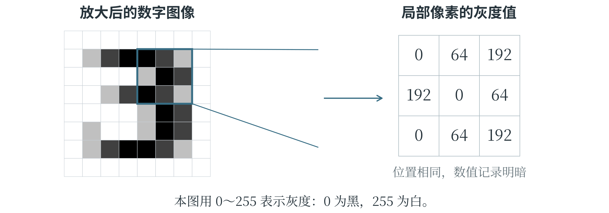
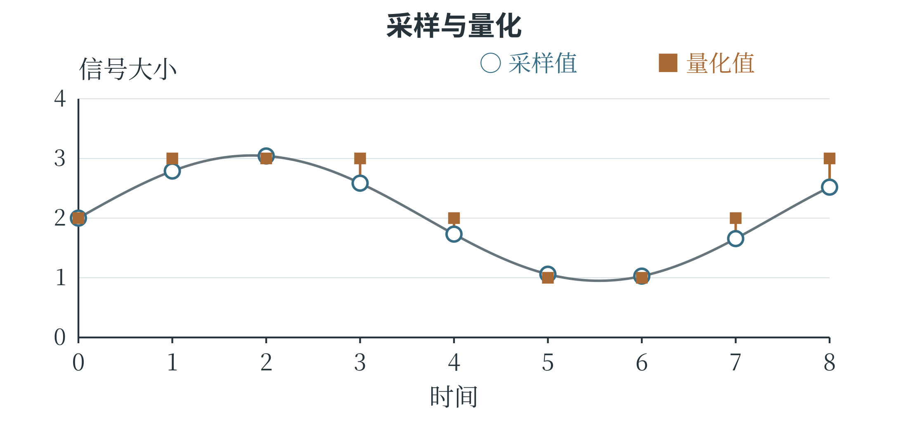

1.2 数据
数据是对观察、测量或记录结果的表示。一张图片、一段录音、一行气温记录，都可以成为人工智能的学习材料。但一个孤零零的“25”，究竟是温度还是人数？只有写成“上午九点，气温为 25 摄氏度”，对象、时间和单位才明确。同样，把以米记录的长度和以厘米记录的长度混在一起，数字即使全部抄对，比较也会出错。数据经过解释和处理，才能提供有意义的信息：连续几天的气温可以用来观察降温，较细的分时记录还可以显示昼夜温差，结合其他材料又能研究气温与用电量的联系。留下了什么、记录得多细，决定了后面能够回答哪些问题。
从连续信号到数字表示
声波、温度和光照可以随时间连续变化。用连续变化的物理量表示对象，称为模拟表示。麦克风的输出电压随着声音变化，就是一例；这里的“模拟”表示两者相互对应，没有“虚假”的意思。计算机主要处理数字数据，也就是用可以分开的符号或数值表示的数据。要把声音变成这样的记录，可以每隔一小段时间测量一次信号高度，再将测得的高度归入有限的数值档位。前一步叫采样，后一步叫量化。采样好比连续“拍快照”，间隔越短，记录越密；量化则像选择尺子的刻度，只有厘米刻度和还有毫米刻度，能分辨的细节不同。录音和图片的数字化都要作这种取舍：希望保留更多细节，就往往要付出更大的存储和处理代价。
数字数据不只是日常所说的那些“数字”。文字需要编码，图像需要记录像素，声音需要记录采样值。以图像为例，图 1-3 把一个数字放大，每个像素都用数值记录明暗；这里采用灰度图像，也就是只用从黑到白的深浅表示画面。虽然文字、图像、声音最终呈现的形式不同，在计算机内部却都由二进制位表示。一个二进制位只能取 0 或 1，多个位组合起来就能表示更多取值。通常，8 个二进制位组成 1 个字节，记作 1 B。程序还要根据编码规则和文件格式，知道应当把这些位读成文字、像素还是其他内容。

数值怎样保留信息
设想一个温度传感器，每隔十分钟记录一次气温，只保留整数。九点到九点十分之间，气温可能先升后降，记录里却只剩两个时刻的数；实际测得 20.2 摄氏度和 20.4 摄氏度，两次还可能都记成 20。前一种细节受采样时间影响，后一种受量化精度影响。图 1-4 把两步放在同一幅图中：横轴是时间，纵轴是信号大小，圆点标出采样时刻的高度，方块标出量化后允许保存的档位。采样所得数值还可能有许多小数位，量化再将它归到某一档；设备往往连续完成这两项工作。
记录中已经丢掉的变化，通常不能靠把图画得更平滑就找回来。

二进制位的数量限制了能区分多少种取值。一个位有 0、1 两种取值，两个位组成 00、01、10、11，共四种；三个位有八种。每增加一个位，原先每种组合都能再接上 0 或 1，组合数便加倍。八个位因此有 256 种组合，可以表示 0 到 255 的整数。常见八位灰度图像就用这些数记录明暗，一个像素占一个字节。由此可以估算：宽、高各 100 像素的图像有 10000 个像素，像素数据共占 10000 字节；同样大小的彩色图像若给红、绿、蓝三个通道各用一个字节，就需要 30000 字节。换用其他精度，数据量也要重新计算。
这个乘法算的是像素数据。实际文件还包含尺寸等信息，也可能经过压缩，文件大小未必等于这个数。
数据的组织与学习任务
结构化数据按照明确的字段和规则组织，表格就是常见形式。一行记录一个对象或一次事件，一列表示一种属性。表 1-1 是一组用于说明数据组织方式的植物观测记录。
表 1-1 植物观测记录示例
| 样本编号 | 叶片长度（厘米） | 叶片宽度（厘米） | 植物类别 |
|---|---|---|---|
| 001 | 8.2 | 3.1 | 甲类 |
| 002 | 5.6 | 4.0 | 乙类 |
| 003 | 7.9 | 2.8 | 甲类 |
统一字段以后，程序就能比较叶长、计算平均叶宽，也能统计各类植物的数量。如果某一行把长度写成“八厘米左右”，就得先整理，才能与其他数值一起计算。假如要根据叶片大小判断植物类别，长度和宽度便可以作为特征，即帮助判断的属性；已知的植物类别则是标签，即希望模型给出的答案。编号主要用来区分记录，001 比 002 小，并不说明植物类别有什么关系。特征与标签也不是一成不变的身份：在这个任务里，类别是待预测的答案；若研究某类植物的叶长，类别又成了已知条件。读一张数据表，必须先知道准备用它回答什么问题。
没有标签的数据也可能有用。例如，相册中未标明对象的照片，仍可用于某些寻找规律的学习方法。
一张表格可以直接列出叶片长多少厘米，一篇文章的意思却很难都装进固定的几列里。文章、图像和录音的主要内容，通常被称为非结构化数据。它们当然也有结构：文章有句子和段落，图像有像素排列，音频有时间顺序；只是其中的意思，通常还需要进一步分析，才能用于统计。例如，两条商品评论分别写着“很好用”和“用起来很顺手”，措辞不同，都可能表达满意。系统分析这些文字后，可以增加“正面”或“负面”的类别字段，再统计不同评价各有多少条。
数据还可以按照表现形式分成不同的模态。文字、图像、音频，就是几种常见模态。一段带声音和字幕的视频同时包含多种模态，使用时还要对齐画面、声音和字幕；如果字幕迟了很久，就可能把一句话配到错误的场景上。前面这些分类是在从不同角度描述数据：“数字与模拟”看怎样表示，“结构化与非结构化”看怎样组织，“单模态与多模态”看有哪些内容形式。因此，一张数字照片可以同时属于数字数据、非结构化数据和图像模态数据。
数据质量
训练数据会影响模型学到什么。如果许多“3”的图片被误标为“8”，训练程序就会把错误答案当作调整依据，模型也可能跟着学错。因此，数据质量首先要看记录是否准确、标签是否可靠，以及该有的内容是否齐全。一万条错误记录并不会因为数量多就变成好材料，重复出现反而可能扩大它们的影响。
另一项要求是代表性，也就是数据应当包含实际任务中重要的情况。动物识别模型如果只见过白天拍摄的正面照片，就没有多少机会学习不同光照和角度带来的变化。更有意思的错误还可能藏在背景里：假如训练照片中的猫总在室内，狗总在草地上，模型可能把背景当成重要线索，学成了“室内像猫，草地像狗”。遇到草地上的猫，它就容易判断失误。此时，照片和标签未必有错，只是这批照片给了模型一个不可靠的“捷径”。补充不同背景、角度和光照下的照片，比一味增加相似照片更可能解决问题。
只调查校队成员，也许能得到一批很准确的运动记录，却很难代表全校学生。记录准确和选得有代表性，是数据质量的两个不同要求。